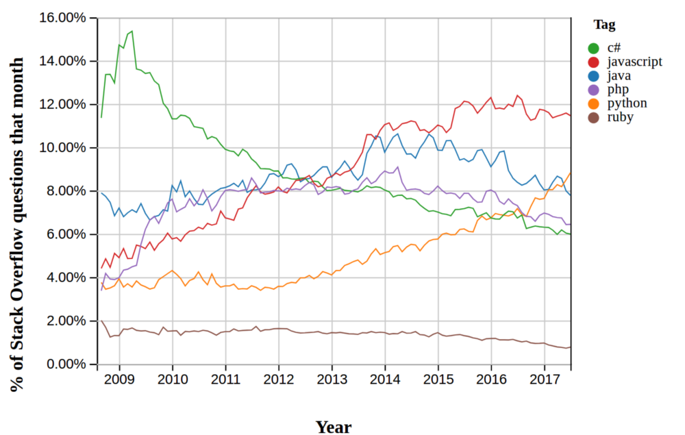
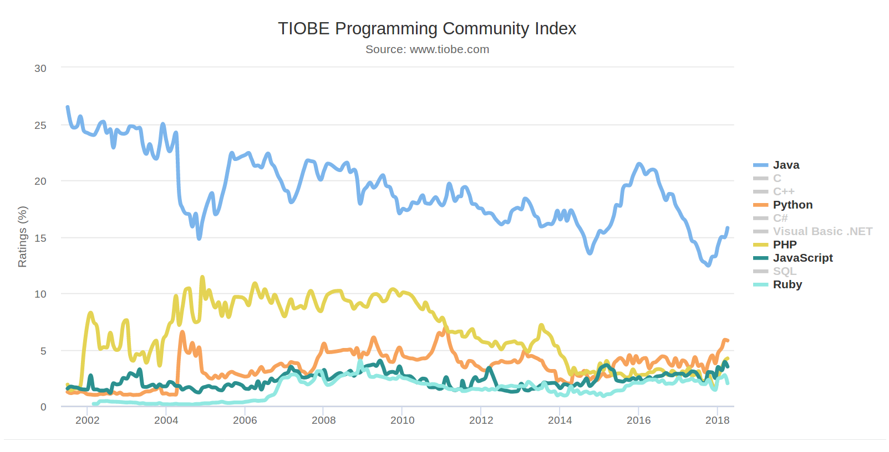
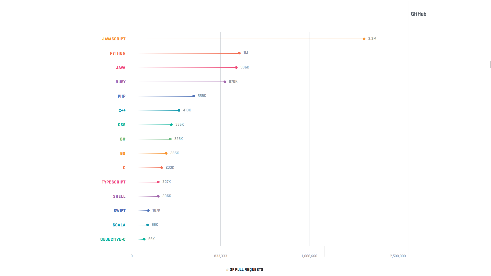
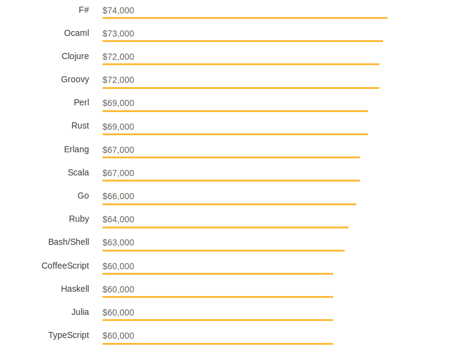
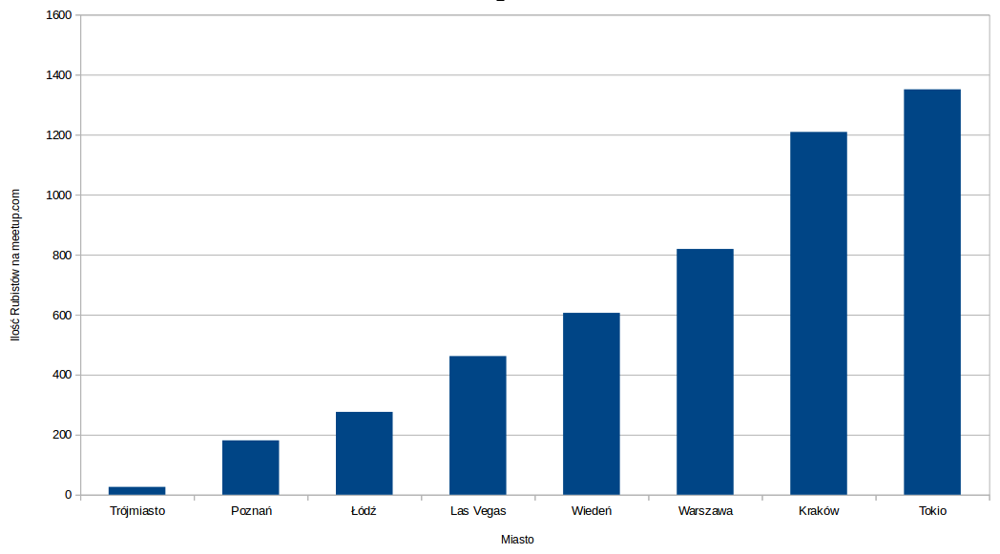
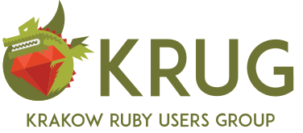
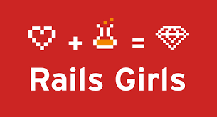

Agenda
1. Dlaczego warto wybrać Ruby?
2. Krótki wstęp do Ruby
3. Ruby on Rails - fakty i mity
$> whoami
Ruby developer od 4 lat
Senior RoR developer @ Railwaymen
Uczestnik KRUG(Kraków Ruby User Group)
Prelegent AGH: KrakYourNet 2016
TechLeaders #3 Mentor
Trendy StackOverflow
TIOBE index: najpopularniejsze wyszukiwania
GitHub 2017: Liczba otworzonych Pull Requestów
Wnioski
1. Ruby nie jest najpopularniejszym językiem
2. Community Ruby utrzymuje się na stałym poziomie
3. Ekosystem Ruby jest aktywny

StackOverflow 2018: najlepiej płatne języki($/rok)
Rynek lokalny na podstawie nofluffjobs.com
7 aktywnych ogłoszeń
4500PLN - 15000PLN
~9000PLN
Ilość Rubistów per miasto (meetup.com)
krug.org.pl
Inne inicjatywy Ruby on Rails
Krótki wstęp do Ruby
Yukihiro "Matz" Matsumoto

M I N A S W A N
Ruby: najważniejsze założenia
1. Wszystko jest obiektem
true.class # => TrueClass
true.methods.count # => 59
1.class # => Integer
1.methods.count # => 137
Ruby: najważniejsze założenia
1. Wszystko jest obiektem
2. Stworzony, by programiści byli szczęśliwi
5.times { |i| puts "Hi #{i}" } # => Hi 0 ...
%w(ruby bo lubi).map(&:upcase).join('-') # => RUBY-BO-LUBI
alphabet = ('a'..'z').to_a.join # => "abcdefg...
Ruby: najważniejsze założenia
1. Wszystko jest obiektem
2. Stworzony, by programiści byli szczęśliwi
3. Otwarty na zmiany(czasami aż za bardzo)
"ruby-bo-lubi".humanize # => NoMethodError
class String
def humanize
self.tr('-', ' ').capitalize
end
end
"ruby-bo-lubi".humanize # => "Ruby bo lubi"
Ruby on Rails - fakty i mity
Ruby 3x3
JRuby
Truffle Ruby by Oracle
cookpad.com
- 50 mln użytkowników miesięcznie (@2015)
- 15 000 requestów na sekundę
- 300 serwerów
- 30 różnych baz danych
- Czas odpowiedzi poniżej 200ms

Q&A
Do zobaczenia na następnym KRUGu!
24.04 18:00 @ BAL(Ślusarska 9)
@_ktopolski